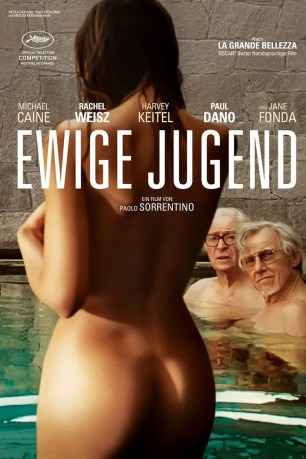

#2999 Ewige Jugend
Auszeichnungen: für 1 Oscars nominiert
 
 IMDB-Wertung: 7.3 / 10
IMDB-Wertung: 7.3 / 10  Metascore: 64
Metascore: 64 
Die beiden alten Freunde Fred Ballinger (Michael Caine) und Mick Boyle (Harvey Keitel) verbringen zusammen mit Freds Tochter und Managerin Lena (Rachel Weisz) einen Erholungsurlaub in einem hochklassigen Wellnesshotel am Fuß der Alpen. Während der berühmte Komponist und Dirigent Fred seinen Ruhestand genießt, ist der noch immer als Filmregisseur aktive Mick in Gedanken häufig bei seinem nächsten Projekt, das zugleich sein letztes werden soll. Doch auch Fred holt seine eigentlich bereits niedergelegte Arbeit bald ein, als ein Abgesandter des Buckingham Palace ihn mit der Anfrage aufsucht, für die Queen persönlich ein Konzert zu dirigieren. Fred lehnt jedoch dankend ab, da er viel lieber gemeinsam mit Mick und dem ebenfalls im Hotel abgestiegenen Schauspieler Jimmy Tree (Paul Dano) in Ruhe über Gott und die Welt sowie die skurrilen anderen Gäste philosophiert.
Jahr: 2015
Dauer: 118 Minuten
FSK: 6
Land: Italien Studio: Wild BunchTonspuren: DTS - ,
Untertitel:
Auflösung: 1080p (1920x808) Größe: 4833 MB
Genre: Drama
Regisseur: Paolo Sorrentino
Drehbuch: Paolo Sorrentino
Soundtrack: David Lang
Darsteller:
- The Retrosettes als Swing Band
 Harvey Keitel als Mick Boyle
Harvey Keitel als Mick Boyle Alex Macqueen als Queen's Emissary
Alex Macqueen als Queen's Emissary Michael Caine als Fred Ballinger
Michael Caine als Fred Ballinger- Ian Keir Attard als 1st Queen's Emissary Assistant #1
 Paul Dano als Jimmy Tree
Paul Dano als Jimmy Tree- Loredana Cannata als South American's Wife
- Madalina Diana Ghenea als Miss Universe
- Nate Dern als Funny Screenwriter
- Alex Beckett als Bearded Screenwriter
- Mark Gessner als Shy Screenwriter
- Tom Lipinski als Screenwriter in Love
- Chloe Pirrie als Girl Screenwriter
 Rachel Weisz als Lena Ballinger
Rachel Weisz als Lena Ballinger- Ed Stoppard als Julian
- Paloma Faith als Herself
 Emilia Jones als Pale Teenager
Emilia Jones als Pale Teenager- Veronika Dash als Marilyn-Ditsy Girl
 Jane Fonda als Brenda Morel
Jane Fonda als Brenda Morel- Poppy Corby-Tuech als Spy Girl
- Anabel Kutay als Sci-fi Girl
- Beatrice Walker als Bikini Girl
- Rebecca Calder als Countess
- Eugenia Caruso als Puritan Woman
- Elizabeth Kinnear als Horror Movie Girl
- Josie Taylor als Diva
- Melinda Bokor als Pretty Woman
- Jasmin Barbara Mairhofer als Ballet Dancer
- Beatrice Curnew als Police Woman
- Tatiana Luter als Girl Soldier
- Anna Marie Cseh als Business Woman
- Carolina Carlsson als Hostess
 Jozef Aoki als Theatre Audience , uncredited
Jozef Aoki als Theatre Audience , uncredited Steve Carroll als Royal Guest , uncredited
Steve Carroll als Royal Guest , uncredited Pamela Betsy Cooper als Theatre Audience , uncredited
Pamela Betsy Cooper als Theatre Audience , uncredited Neve Gachev als Royal Guest at the Theater , uncredited
Neve Gachev als Royal Guest at the Theater , uncredited Minouche Kaftel als Classical Music Enthusiast , uncredited
Minouche Kaftel als Classical Music Enthusiast , uncredited Rita McDonald Damper als Theatre Audience , uncredited
Rita McDonald Damper als Theatre Audience , uncredited Shina Shihoko Nagai als Theatre Audience , uncredited
Shina Shihoko Nagai als Theatre Audience , uncredited Jay Natelle als Pilot , uncredited
Jay Natelle als Pilot , uncredited- Aaron Sequerah als Royal Guest , uncredited
- Vassiliki Tzanakou als Theatre Audience , uncredited
- Gabriella Belisario als Escort
- Adam Jackson-Smith als 2nd Queen's Emissary Assistant #2
- Roly Serrano als Diego Maradona, South American
- Mark Kozelek als Himself
- Luna Zimic Mijovic als Masseuse
- Vincent Wolterbeek als Eastern Masseur
- Laura De Marchi als Escort's Mother
- Wolfgang Michael als Doctor
Datei: X:\2015(A-F)\Ewige Jugend (2015, FSK6, 1920x808).mkv seit 15.01.2016
Festplatte: HD 2015(A-Z)
 Es gibt insgesamt 143 Filme in der Gruppe '2015(A-F)'
Es gibt insgesamt 143 Filme in der Gruppe '2015(A-F)'